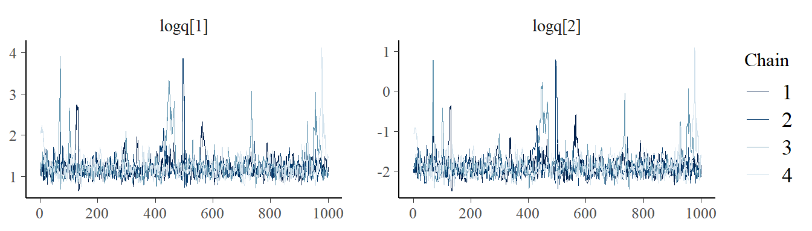
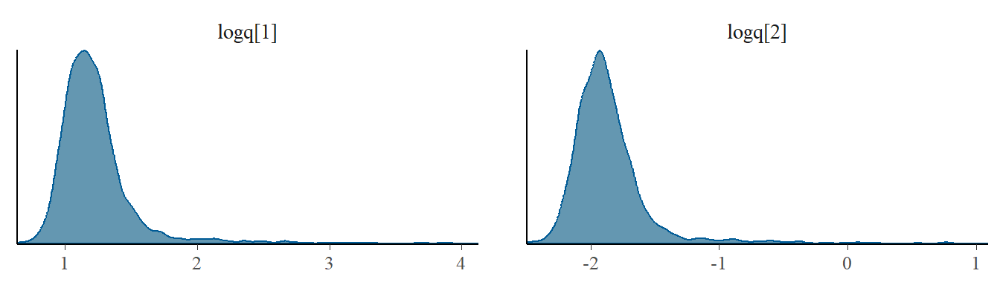

Examples of using msmbayes
Christopher Jackson chris.jackson@mrc-bsu.cam.ac.uk
2025-01-27
Source:vignettes/examples.Rmd
examples.RmdThis article demonstrates the basic use of the msmbayes
package to fit Bayesian multi-state models to longitudinal data
consisting of intermittent observations of a state.
It shows that
msmbayescan reproduce the true parameter values for a simulated dataset, within an expected margin of simulation error, and gives similar results tomsm.It gives some general hints and warnings about Bayesian implementation of these models, e.g. priors, computational challenges. Though this is the subject of ongoing research.
A general introduction to the theory and practice of multi-state
modelling is given in the documentation and course notes for the msm
package.
msmbayes essentially fits Bayesian versions of some of
the models in msm. However msmbayes has more
limited features - see the front page for a more detailed
comparison.
Simulated infection testing data
These examples all use a simulated dataset designed to mimic a longitudinal study where people are repeatedly tested for an infection.
We assume a two-state multi-state model, with states “test positive” and “test negative”.

The data are simulated from a continuous-time Markov model with the following transition intensity matrix. Expressed in days or months, respectively, this is
## Error in get(paste0(generic, ".", class), envir = get_method_env()) :
## object 'type_sum.accel' not foundThat is, everyone starts with no infection, then,
the mean time until the next infection is 180 days (6 months) (the mean sojourn time in state 1)
the mean time with infection is 10 days (0.33 months) (the mean sojourn time in state 2)
We then suppose that 100 people are tested every 28 days, and assume
the test is a perfect indicator of infection. The final dataset stores
the state at each test time in the variable state.
We also simulate some covariates, including sex and age, and a state
outcome statec which depends on these covariates (see below).
Note: age is expressed in units of (years - 50)/10. Centering around a typical value (50 years), and scaling to a unit of interest (10 years) will help with both MCMC computation and interpretation of parameters.
head(infsim)## subject days months state sex age10 statec statep statepc
## 1 1 0 0.00 1 male -0.31322691 1 1 1
## 2 1 28 0.92 1 male 0.09182166 2 1 1
## 3 1 56 1.84 1 male -0.41781431 1 1 1
## 4 1 84 2.76 1 male 0.79764040 1 1 2
## 5 1 112 3.68 1 male 0.16475389 2 1 2
## 6 1 140 4.60 1 male -0.41023419 2 1 2We analyse this dataset with continuous-time multistate models, where
we assume transitions between states can happen at any time, and not
just at the observation times. In this demonstration, when we fit the
models, we pretend that we only know the state at the time of each test,
and that we don’t know the true times of infection and recovery. This is
the typical style of data that the msm package is used for
— where the state is only known at a series of arbitrary times.
Note: Both
msmandmsmbayesallow any number of states and structure of allowed transitions. This includes models with or without “absorbing” states, such as death. However,msmbayeshas some limitations, listed on the front page. For example, the “exact death times” observation scheme (where we suppose the time of death is known, but the state immediately before death is unknown) is not supported.
Fitting a basic Markov model with msmbayes
First we demonstrate fitting the basic two-state Markov multi-state model with no covariates. There are two unknown parameters: the transition intensities between 1-2 and 2-1.
The first argument to msmbayes is the dataset, and
additional named arguments indicate the names of the columns in the data
that contain the state, the time of observation and the subject
(individual) identifier.
Note: unlike in
msm(), the names of variables in the data must be quoted as strings, not “bare” variable names.
Q <- rbind(c(0, 1),
c(1, 0))
draws <- msmbayes(data=infsim, state="state", time="months", subject="subject",
Q=Q)## Warning: Tail Effective Samples Size (ESS) is too low, indicating posterior variances and tail quantiles may be unreliable.
## Running the chains for more iterations may help. See
## https://mc-stan.org/misc/warnings.html#tail-essTransition structure
The argument Q to msmbayes() is a square
matrix that indicates the transition structure. This is in the same
format as msm():
The number of rows (or columns) indicates the number of states, here 2.
The diagonal of this matrix is ignored - what you specify on the diagonal doesn’t matter.
The off-diagonal entries of
Qwhich are 1 indicate the transitions that are allowed in continuous time (here, state 1 to state 2, and 2 to 1).The off-diagonal entries of
Qwhich are 0 indicate the transitions that are not allowed in continuous time (here, all transitions are allowed).
Prior distributions for transition intensities
The parameters of the model,
,
are transition intensities in continuous time. These are not
probabilities, but rates. In particular, they are not probabilities of
transition over an interval of time, as in a discrete-time Markov model.
See, e.g. the msm
course notes for more discussion of this distinction.
To interpret these values, note that is the rate at which transitions to are observed for a population in state . So is the mean time to the next transition to that would be observed in a population in state , if we were to observe one person at a time (switching to observing a different person if a “competing event”, i.e. a transition to a state other than , happens). Or put more simply perhaps, the mean time from state to if there were no competing events.
In a Bayesian model, prior distributions must be defined for all
parameters. In msmbayes, normal priors are used for the log
transition intensities. The mean and standard deviation of these priors
can be set through the priors argument to the
msmbayes function. This is a list of objects created by the
function msmprior. These objects can be specified in
various alternative ways:
-
Directly specifying the mean and standard deviation for , e.g.:
-
Specifying prior quantiles for , or :
We can specify two out of the
median(i.e. 50% quantile), thelower95% quantile or theupper95% quantile for any of these quantities. Perhaps the easiest to interpret is , the mean time to event for people in , supplied here astime(r,s). Only two quantiles should be provided for each parameter, because this allows a unique normal distribution on to be deduced. Different specifications can be mixed for different parameters, e.g.
Note: the prior represents a belief about the average in a population - not a distribution for individual outcomes. Here, it means that we expect the average time from state 1 to state 2 (over a population) is 10 months, but this average could be as high as 30. We are not saying that we expect to see individual times to events of up to 30.
-
Accept the defaults.
For any parameters not supplied in the
priorsargument, a normal distribution with a mean of -2 and a standard deviation of 2 will be used for . This implies a 95% credible interval of between and for the event rate, equivalent to a mean time to event of between 0.1 and 400. This is appropriately vague in many applications, but a more thoughtful choice is recommended in practice. Note the prior depends on the time unit (e.g. days or months).
The object priors is supplied as the priors
argument to msmbayes, e.g.
msmbayes(..., priors=priors,...)Outputs from msmbayes
The msmbayes() function uses Stan to draw a sample from the joint
posterior distribution of the model parameters. By default, MCMC is
used, but faster approximations are available (see below).
msmbayes() returns an object in the draws
format defined by the posterior R package. This format is
understood by various Bayesian R packages. For example, we can use the
bayesplot package to check that the MCMC chains have
converged, using trace-plots of the main parameters (here the log
transition intensities, labelled logq), and to examine the
posterior distributions. Trace plots should look horizontal and fuzzy,
like a sequence of independent draws from the same distribution, if the
chains have converged (as here).
library(bayesplot)
mcmc_trace(draws, pars=c("logq[1]","logq[2]"))

The summary() function can be used to summarise the
basic parameter estimates (transition intensities here). This gives a
summary of the posterior for each parameter (variable
value), alongside a summary of the prior for that
parameter. Since transition intensities are hard to interpret in
isolation, the mean sojourn times in each state are included alongside,
labelled mst.
summary(draws)## # A tibble: 4 × 5
## name from to value rhat
## <chr> <int> <int> <rvar[1d]> <dbl>
## 1 q 1 2 0.16 ± 0.063 1.01
## 2 q 2 1 3.53 ± 1.390 1.01
## 3 mst 1 NA 6.68 ± 1.420 1.01
## 4 mst 2 NA 0.30 ± 0.063 1.01The mean sojourn times are estimated to be (within estimation error) close to the true values of 6 and 0.33 months, as expected.
Set time=TRUE to summarise the
(mean times to event, ignoring competing events, as described above) and
their priors. If there are no competing risks, as here, these are equal
to the mean sojourn times. Or set log=TRUE to summarise the
.
summary(draws, time=TRUE)## # A tibble: 4 × 5
## name from to value rhat
## <chr> <int> <int> <rvar[1d]> <dbl>
## 1 time 1 2 6.7 ± 1.420 1.01
## 2 time 2 1 0.3 ± 0.063 1.01
## 3 mst 1 NA 6.7 ± 1.420 1.01
## 4 mst 2 NA 0.3 ± 0.063 1.01The summary output also gives the “Rhat” convergence
diagnostic, which should be close to 1.0 if the MCMC estimation has
converged (see
here for more explanation.)
See also qdf() to get just the intensities, or
qmatrix() for the same quantities in a matrix rather than
data frame format, and mean_sojourn() to get just the mean
sojourn times.
The value column of data frames returned by these
functions is of type rvar. This data type is from the
posterior package. It is designed to contain random
variables, such as uncertain quantities in Bayesian models. Instead of a
single value, it stores a sample from the quantity’s distribution. Here
this is the posterior distribution. It is printed here as a posterior
mean
one standard deviation.
To extract specific posterior summary statistics, the
summary function can be used on any of these data
frames.
With no further arguments, the default summary statistics from the
posterior package will be used. Or the user can specify
their own functions, as in the following call. See the
posterior package documentation
for more examples.
summary(mean_sojourn(draws), mean, median, ~quantile(.x, c(0.025, 0.975)))## state mean median 2.5% 97.5%
## 1 1 6.683310 6.7464642 3.4533375 9.269407
## 2 2 0.303457 0.3088913 0.1570317 0.416692Fitting a Markov model with covariates
To demonstrate how to fit a Markov multi-state model with covariates, some data are simulated from a model with covariates.
The variable statec in the infsim data is
simulated from a continuous-time Markov model with intensities
,
where
is an individual,
is a binary indicator of whether they are male, and
is their age. The log hazard ratios for the effects of covariates on the
1-2 transition are
,
and for the 2-1 transition,
.
is the intensity for a “reference” or baseline individual, defined as a
50 year old woman. The same values as above
are used for this. In the data infsim, age is expressed in
units of 10 years, and centered around age 50. Centering around a value
of interest helps with interpretation of the intercept term
.
Centering and scaling covariates to a roughly unit scale also tends to
help with computation, especially for MCMC.
To include covariates in a msmbayes model, a
covariates argument is included. The following model
supposes that sex and age are predictors of both the 1-2 and 2-1
transition intensities. Weakly informative priors are defined for the
covariate effects, through specifying upper 95% credible limits of 50
for the hazard ratios.
priors <- list(msmprior("hr(age10,1,2)",median=1,upper=50),
msmprior("hr(age10,2,1)",median=1,upper=50),
msmprior("hr(sexmale,1,2)",median=1,upper=50),
msmprior("hr(sexmale,2,1)",median=1,upper=50))
draws <- msmbayes(infsim, state="statec", time="months", subject="subject",
Q=Q, covariates = list(Q(1,2)~sex+age10, Q(2,1)~sex+age10),
fit_method="optimize",
priors = priors)The syntax of the covariates argument is a list of
formulae. Each formula has
a left-hand side that looks like
Q(r,s)indicating which transition intensity is the outcome,a right-hand side giving the predictors as a linear model formula.
For example, Q(2,1) ~ sex + age indicates that
is an additive linear function of age and sex.
Note: This syntax is slightly different from
msm, where we would use a named list of formulae with empty “outcome” left-hand sides, e.g.covariates = list("1-2" = ~sex+age, "2-1" = ~ sex+age).
After fitting a msmbayes model with covariates, the
summary function on the model object returns the estimates
of the baseline intensities
and the hazard ratios
,
indicated here by covariate name and transition.
summary(draws) ## # A tibble: 8 × 5
## name from to value rhat
## <chr> <dbl> <dbl> <rvar[1d]> <dbl>
## 1 q 1 2 0.21 ± 0.084 1.00
## 2 q 2 1 4.67 ± 1.904 1.00
## 3 mst 1 NA 5.59 ± 2.257 1.00
## 4 mst 2 NA 0.25 ± 0.101 1.00
## 5 hr(sexmale) 1 2 5.74 ± 2.315 1.00
## 6 hr(age10) 1 2 3.19 ± 1.587 1.00
## 7 hr(sexmale) 2 1 0.62 ± 0.264 1.00
## 8 hr(age10) 2 1 0.38 ± 0.205 1.00The functions loghr or hr can be used to
summarise the log hazard ratios or hazard ratios in isolation. The
estimates of the log hazard ratios are close to the true values of 2, 1,
0, and -1 used to simulate the data, within estimation error.
loghr(draws) ## from to name value
## 1 1 2 sexmale 1.67 ± 0.39
## 2 1 2 age10 1.05 ± 0.47
## 3 2 1 sexmale -0.57 ± 0.41
## 4 2 1 age10 -1.11 ± 0.51Note the posterior distributions are skewed, hence the posterior mean of the hazard ratio is different from the of the posterior mean of the log hazard ratio. The mode or median may be preferred as a point estimate.
Priors on covariate effects
Normal priors are used for the log hazard ratios
.
These can be specified through the priors argument, as
above, either by specifying the mean and SD for the log hazard ratios,
or quantiles of either the hazard ratios or the log hazard ratios. Note
the specific covariate should be referred to as well as the transition.
For example, to define priors for the effect of age on the 1-2 and 2-1
transition rates respectively:
priors <- list(msmprior("loghr(age,1,2)", mean=0, sd=2),
msmprior("hr(age,2,1)", median=1, upper=5))For factor covariates, the appropriate factor level should be
included in the name (as done for sexmale above).
For any priors for log hazard ratios not specified through
priors, a default normal prior with mean 0 and SD 10 is
used. Be careful of this prior choice. Bear in mind the likely size of
covariate effects when choosing the prior variance. Make sure the prior
represents any evidence about the effect that exists outside the
data.
Notes on computation and tuning
-
The
fit_methodargument specifies the algorithm used to fit the Bayesian model."sample"is the default, which uses the standard Hamiltonian MCMC algorithm, via the function rstan::sampling. Users can pass arguments to this functions throughmsmbayesto control sampling, e.g. initial values, parallel processing.fit_method="optimize"uses the function rstan::optimizing which determines the posterior mode exactly for the parameters on their real-line scales (e.g. log intensities, log hazard ratios), then uses a normal (Laplace) approximation to the distribution around this mode. MCMC reveals some skewed posterior distributions in this case, so this approximation is not ideal. However, it is much faster than MCMC.Variational Bayes methods are also available, via
fit_method="vb"which calls rstan::vb, andfit_method="pathfinder"which calls the more advanced Pathfinder method. The Pathfinder method requirescmdstanrandcmdstanto be installed manually. These methods are designed to be much faster than MCMC and approximate the posterior in a slightly more sophisticated way than the Laplace method. If the approximation is poor, then a warning message referring to the “Pareto k value” will be printed when the model is fitted.
This example works with Stan’s default MCMC initial values, which are sampled from the priors. Users could also supply the
initargument tomsmbayes, which is passed to Stan.If the model fits the data badly, then the sampling may be bad with any method.
Sampling can also be bad when covariate values are on different scales. Centering and scaling is usually sensible, as mentioned.
Comparison between a Bayesian and a frequentist multistate model
Compare with the same model fitted in the msm package by
maximum likelihood. Awkwardly, the optimiser used by msm
needs to be tuned (with the fnscale option) to find the
global optimum.
## Warning: package 'msm' was built under R version 4.4.2
msm(statec~months, subject = subject, data = infsim, qmatrix = Q,
covariates = list("1-2" = ~sex+age10, "2-1" = ~sex+age10),
control = list(fnscale=1000, maxit=10000))##
## Call:
## msm(formula = statec ~ months, subject = subject, data = infsim, qmatrix = Q, covariates = list(`1-2` = ~sex + age10, `2-1` = ~sex + age10), control = list(fnscale = 1000, maxit = 10000))
##
## Maximum likelihood estimates
## Baselines are with covariates set to their means
##
## Transition intensities with hazard ratios for each covariate
## Baseline sexmale
## State 1 - State 1 -0.5114 (-1.2556,-0.2083)
## State 1 - State 2 0.5114 ( 0.2083, 1.2556) 4.5467 (1.5166,13.631)
## State 2 - State 1 3.7258 ( 1.5021, 9.2415) 0.4722 (0.1407, 1.585)
## State 2 - State 2 -3.7258 (-9.2415,-1.5021)
## age10
## State 1 - State 1
## State 1 - State 2 2.3576 (0.68633,8.099)
## State 2 - State 1 0.2687 (0.07144,1.011)
## State 2 - State 2
##
## -2 * log-likelihood: 2625.65## [1] 7.3890561 2.7182818 1.0000000 0.3678794The estimates of the hazard ratios (note, not the log hazard ratios here) are within estimation error of the true values, but they differ from those of the Bayesian model, due to the influence of the prior distributions. This shows that the information from the data is not strong enough to overcome the influence of the prior, and suggests that priors should be thoughtfully chosen and transparently communicated if this were a real example.
One common problem with multi-state models for
intermittently-observed data is that the likelihood surface is awkwardly
shaped. When using msm, this can lead to the optimiser
appearing to “converge”, but to a local optimum, or “saddle point”,
rather than the true global maximum of the likelihood. Symptoms of this
problem may include very large confidence intervals (which happens here
if fnscale is not set), or a warning related to the Hessian
matrix being non-invertible. More seriously, there may be convergence to
the wrong optimum but with no obvious symptoms - this can only be
detected by running the optimiser many times with different initial
values.
An advantage of the Bayesian estimation methods used here is that
after sampling, we can see the full shape of the posterior distribution.
In this example, if we had used MCMC (fit_method="sample"
rather than fit_method="optimize"), we could observe that
the true (non-approximated) posterior is skewed for all the model
parameters, and may be “multimodal”, i.e. has several peaks. Though that
would be much slower to run.